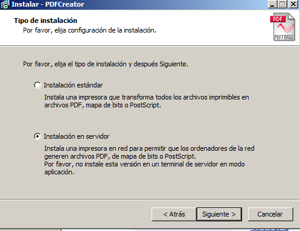

- Módulo: Sistemas Operativos
- Título del trabajo Servidor de Impresión en Windows Server
- Componentes del grupo: Cinthia Vargas Jiménez
- Curso Académico: 2014/2015
- Fecha de entrega: 13 Febrero 2015
En nuestro servidor instalamos PDFCreator

Seleccionamos los componentes a instalarse Instalación personalizada
La instalación se completó correctamente
Seleccionaremos las funciones del servidor :
Servicio de dominio active directory , Servicios de impresión y Servicios de archivos
Seleccionaremos la opción : Servidor de impresión
Dentro de Dispositivos e impresoras, agregaremos PDFCreator
Creamos en el servidor a los usuarios : alumno1 y alumno2
Click derecho sobre la impresora agregada, seguridad y agregaremos al dominio los usuarios anteriormente creados
Desde nuestro cliente , nos conectamos mediante el dominio , en mi caso me conectaré mediante alumno2
Nos hemos conectado al servidor , mediante el cliente
Desde el navegador digitamos servidor21/printers , (servidor21= nombre del servidor)
Dentro de nuestro cliente , agregaremos una impresora compartida , como se muestra en la siguiente imagen
En la siguiente imagen , nos pedirá el usuario y la contraseña , para tener acceso a la impresora
Mandamos a imprimir desde nuestro servidor , un documento de prueba
Seleccionamos la impresora anteriormente configurada
Nos conectamos desde nuestro cliente y verificamos si el documento se encuentra